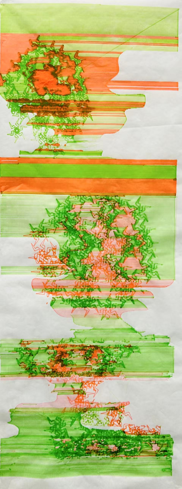
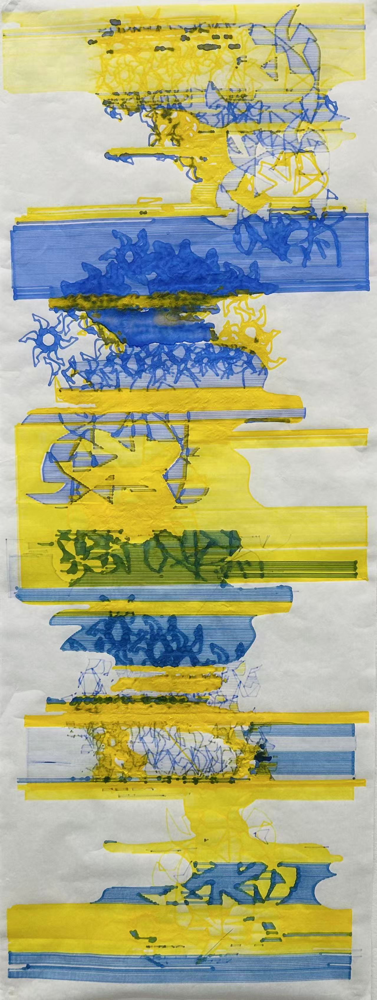

Week 3 Homework Documentation
Final Work & Installation

Pen Plotter, Brush Pens

Pen Plotter, Brush Pens
Description
This final project combined my earlier experimentatioin of materials and forms. Since we were not allowed to use image tracing this time, I combined abstract forms that I made in cuttle with adobe illustrator to create those abstract forms. This time, I was also manually changing the brush pens as the printing process went by, and this intervention created the merging of colors and bleeding effects that I really enjoyed.